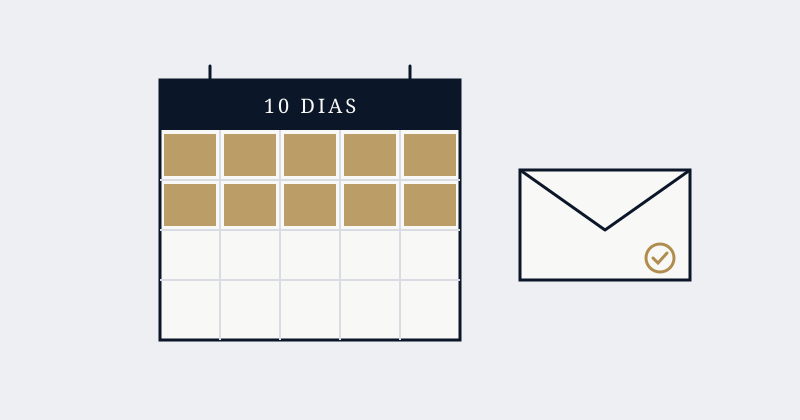
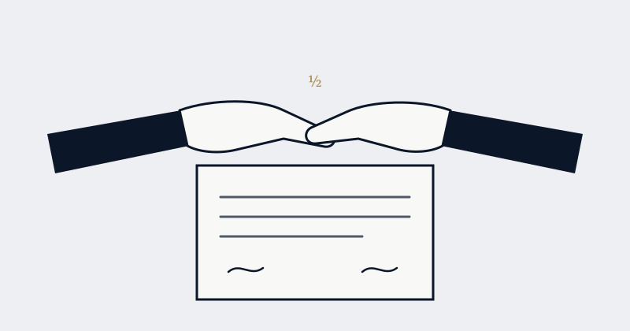

Artigos e notícias · Direito Trabalhista
Rescisão do contrato de trabalho: verbas e prazos
Publicado em 28 de outubro de 2026 · Leitura de 6 min

Ao fim do contrato de trabalho, a empresa tem 10 dias para pagar as verbas rescisórias e entregar os documentos ao empregado. As verbas mudam conforme o tipo de rescisão: sem justa causa, pedido de demissão, justa causa ou acordo entre as partes. O atraso gera multa de um salário.
Qual é o prazo para pagar a rescisão?
Desde a reforma trabalhista de 2017, o prazo é de 10 dias contados do fim do contrato, com aviso prévio trabalhado ou indenizado (art. 477, § 6º, da CLT). No mesmo prazo, a empresa deve entregar os documentos e comunicar a saída aos órgãos competentes. Se pagar com atraso, deve uma multa no valor de um salário do empregado (art. 477, § 8º).

O que é devido na dispensa sem justa causa?
Saldo de salário, aviso prévio, 13º salário proporcional, férias vencidas e proporcionais com o adicional de 1/3, multa de 40% sobre o FGTS e liberação do saque do FGTS. O empregado também recebe a documentação para pedir o seguro-desemprego, se cumprir os requisitos.
O aviso prévio é de 30 dias, com mais 3 dias por ano completo de trabalho, até o limite de 90 dias (Lei nº 12.506/2011).
E no pedido de demissão ou na justa causa?
No pedido de demissão, o empregado recebe saldo de salário, 13º proporcional e férias com 1/3, mas não tem multa do FGTS, saque do FGTS nem seguro-desemprego. Ele deve cumprir o aviso prévio ou pode ter o valor descontado.
Na justa causa (art. 482 da CLT), o empregado recebe apenas o saldo de salário e as férias vencidas com 1/3. Como a justa causa é a penalidade mais grave, a empresa precisa ter provas do motivo.

Como funciona a rescisão por acordo?
A reforma de 2017 criou a rescisão por acordo entre empresa e empregado (art. 484-A da CLT). Nela, o aviso prévio indenizado e a multa do FGTS são pagos pela metade (a multa fica em 20%), o empregado pode sacar até 80% do FGTS e não tem direito ao seguro-desemprego. As demais verbas são pagas de forma integral.
A homologação no sindicato ainda é obrigatória?
Em regra, não. A Lei nº 13.467/2017 retirou essa exigência. Algumas convenções coletivas, porém, ainda preveem a assistência do sindicato, por isso vale conferir a norma da categoria.
Base legal
CLT, arts. 477, 482 e 484-A, com as alterações da Lei nº 13.467/2017; Lei nº 12.506/2011.
Conteúdo de caráter informativo, sem promessa de resultado, em conformidade com o Provimento nº 205/2021 do Conselho Federal da OAB.